「きょうのわたしは、 な気分！
だからツヅク、朝ごはんは まかせた！」
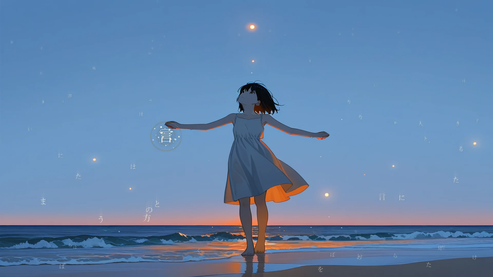
主題歌「よみかけの星」。言継ぎで世界が書き換わるところまで、93秒で。
星が堕ちる島がある。
大陸から遠く離れた辺境の島。ここでは時折、夜空から星が堕ち、
翌朝の浜に「言葉のかけら」が打ち上がる。
淡く光るその欠片は、道具を直し、灯りをともし、島の暮らしを支えてきた。
言葉拾いの少年は、いつものように夜明けの浜を歩いていた。
島始まって以来という大きな星堕ちの、次の朝だった。
浜に打ち上げられていたのは、いつもの言葉のかけらだった。
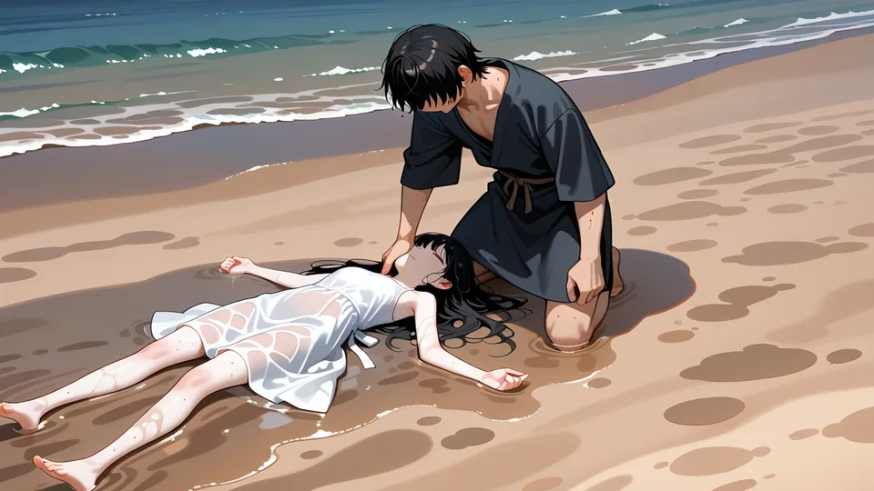
少女は物語のことなら何でも知っているくせに、パンの食べ方ひとつ知らなかった。 彼女に言葉を教え、名前を贈り、二人で星の欠片を拾う日々。
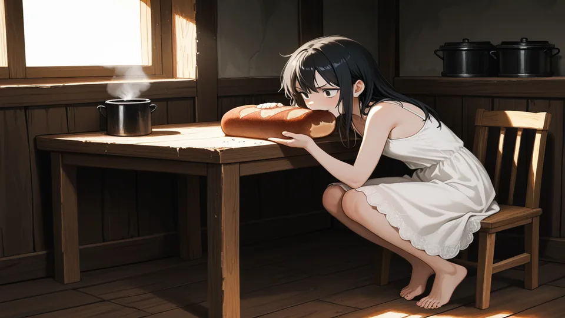
その静かな日常は、少女を狙う「王の猟犬」の上陸とともに終わりを告げる。
――なぜ常夜の王は、記憶のない少女ひとりを、国を挙げて狩るのか。
――そもそも星は、どこから堕ちてくるのか。
少年と少女の、世界の果てへの旅が始まる。
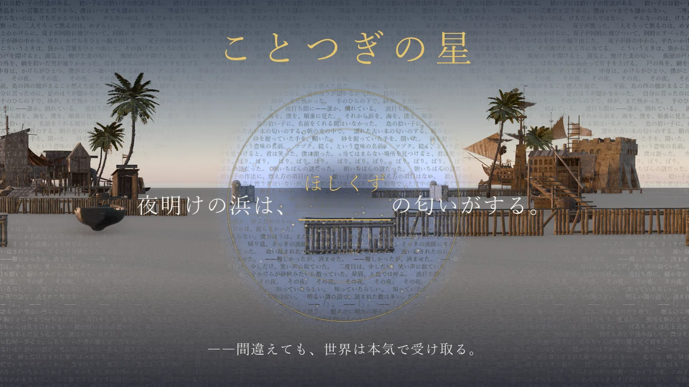
このゲームの文章には、ところどころ「欠け」がある。
拾った言葉を、欠けに継ぐ。――物語は、あなたの言葉で姿を変える。
▼ ためしに、言葉を継いでみてください
そして――このページのどこかで光っている言葉のかけらは、拾える。
▼ 拾った言葉で、行き先を決めてください。正しい言葉は、地図にない道を開きます
継ぐ言葉でシーンはまるごと別の展開に書き換わる。とんでもない一文が生まれたら図鑑に収録。全パターン収集に挑め。
物語の分岐を開くのは選択肢ではない。「あの場面のあの欠けに、あの言葉を」――旅で拾い集めた言葉だけが、新しい道を拓く。
あなたがフィーネに教えた言葉は、彼女の口癖になり、好きなものになり、あなただけの彼女を形づくる。
読んだ物語と拾った言葉は、夜空の星座として灯っていく。――このページでも、もう灯りはじめていることに気づきましたか。
感情表現に対応した最新の音声合成による、しっとりとした「語り」の朗読と、フルボイスの掛け合い。
共通ルートから分岐する3つの旅路と、その先に隠された真実の物語。すべての真実は、一つの結末へ収束する。
物語が深まると、あなたの手は「欠け」の外に届きはじめる。すでに書かれた言葉を書き換える力。書かれた事実を消す力。そして――世界の前提そのものに触れる力。
▼ その意味は、このページの最後で。
島には、たいして人がいない。だからひとりずつ、顔を憶えていける。
▼ 表情をえらんでください。その人の顔が変わります
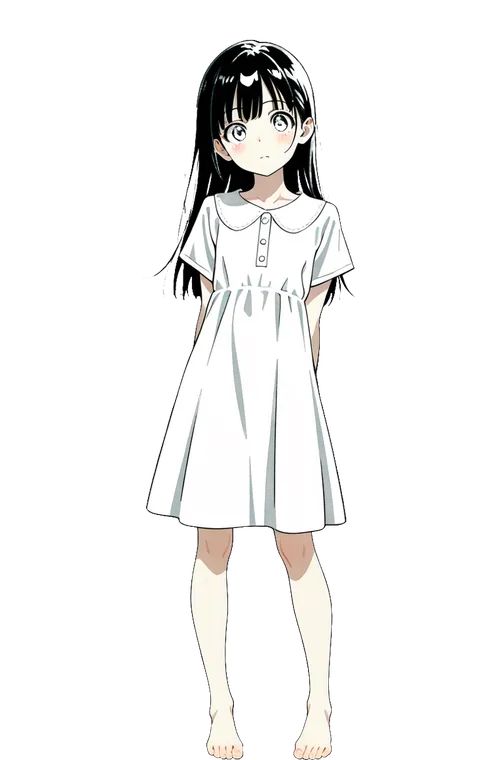
最大の星堕ちの朝、浜に打ち上がっていた記憶のない少女。物語の型には異様に詳しいのに、生活常識が全くない。教わった言葉を、嬉しそうに何度も繰り返す。
辺境の島に暮らす言葉拾いの少年。現実的で世話焼きなツッコミ気質。名前を持たなかったが、少女が浜で拾った言葉「つづく」から名付けられた。
――彼にだけ、立ち絵がありません。用意し忘れたのではなく、置いていません。なぜかは、まだ言えません。
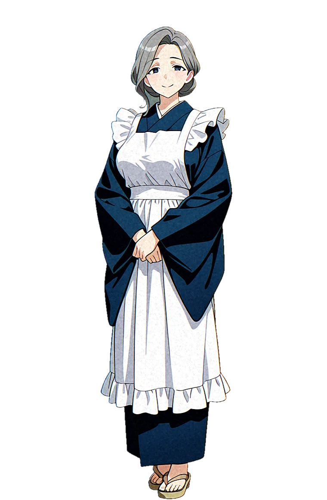
飯屋の老婆。島の胃袋と小言をひとりで預かっている。名前の無かった少年に、いちばん長く飯を食わせてきた人。
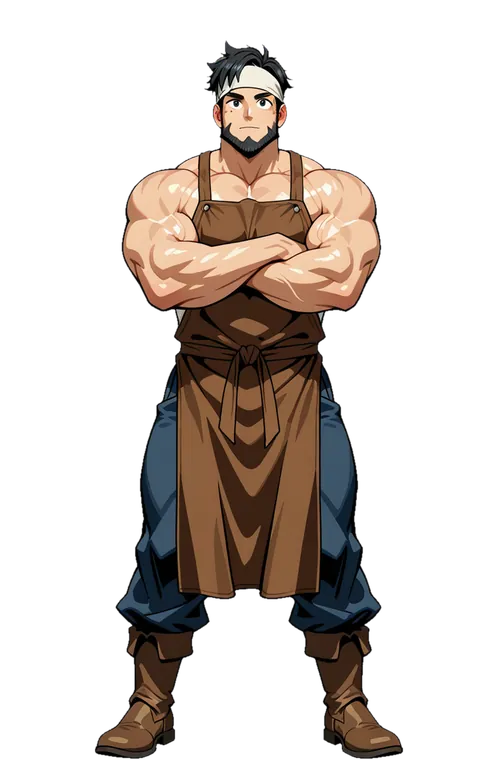
拾われた言葉のかけらを、鍬に、錨に、鍋に打ち直す男。炉の前でだけ、めっきり口数が減る。
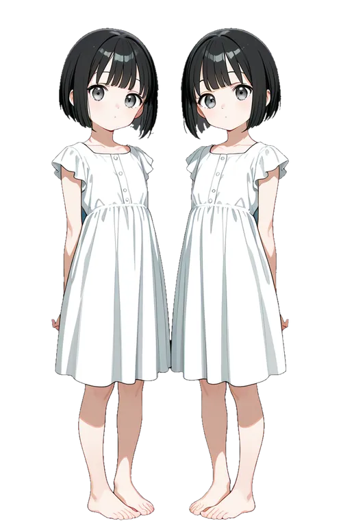
村の広場の主。遊びには名前が要る、と固く信じていて、名前のついていない遊びは遊びと認めない。
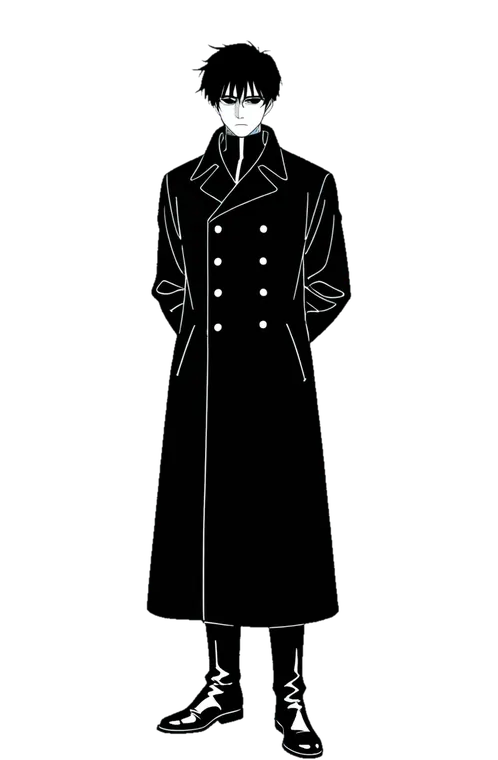
常夜の王の命を受け、少女ひとりを狩るために島へ上がってくる男。任務のこと以外は、何ひとつ言わない。
明けない黄昏の玉座から世界を統べる災厄の君主。芝居がかった悪の演説と圧倒的な力で、なぜかフィーネただ一人を執拗に追う。
この物語を朗読する、穏やかな声。章のはじまりと終わりに、少しだけ言葉を添える。
大陸の海図の、いちばん端。名前の要る場所だけに名前がついている島です。
風景はすべて 3D で建て、Blender で焼いた実景です。
光では場所は変えられない――同じ広場を赤くしても、金床の無い場所は鍛冶場になりませんでした。
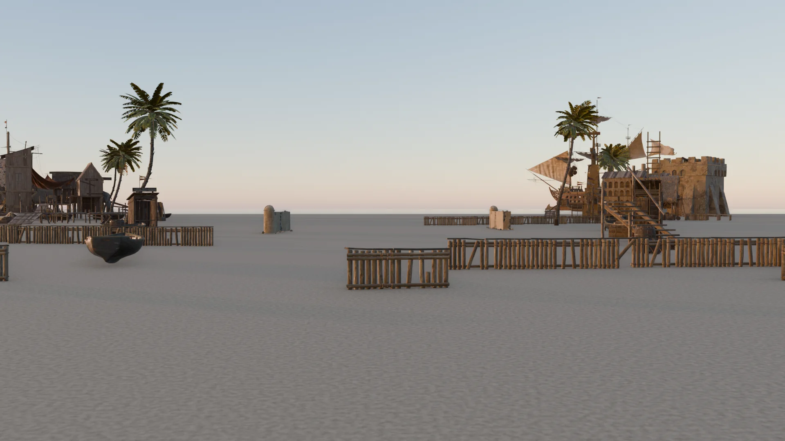
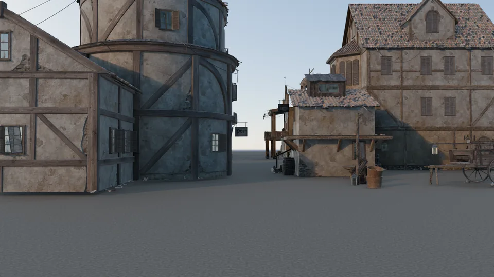
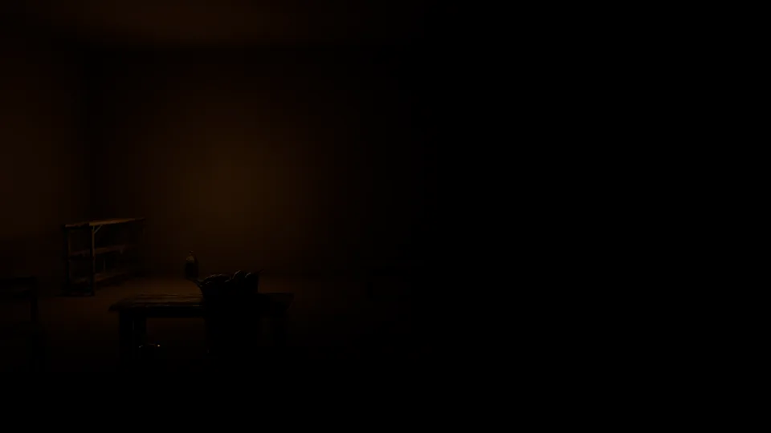
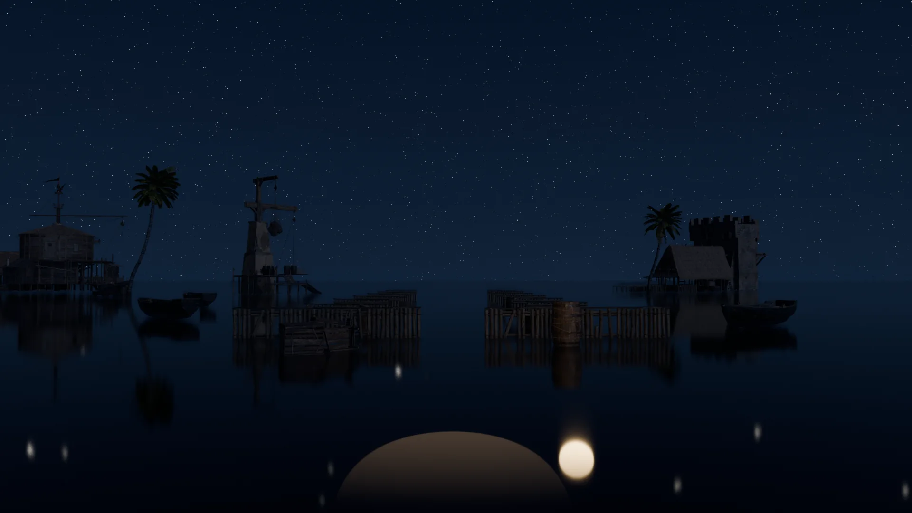
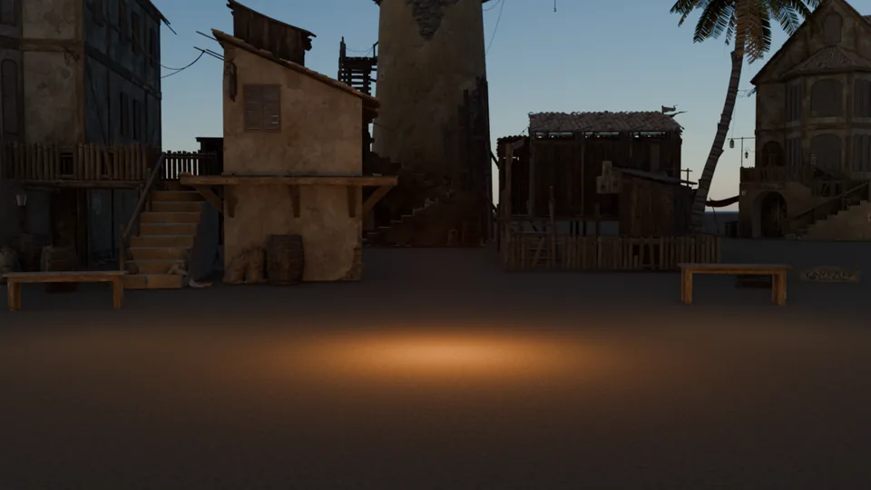
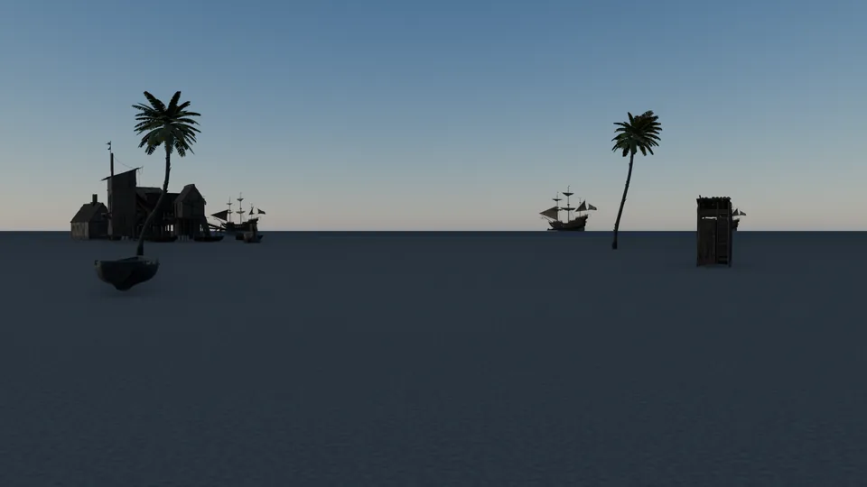
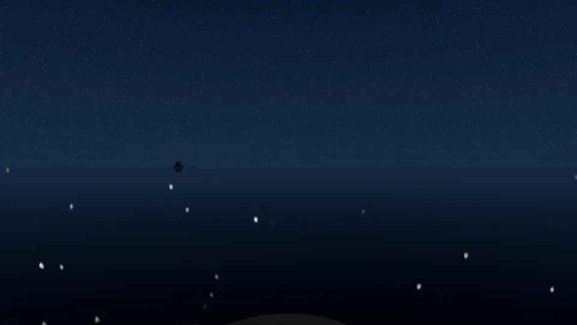
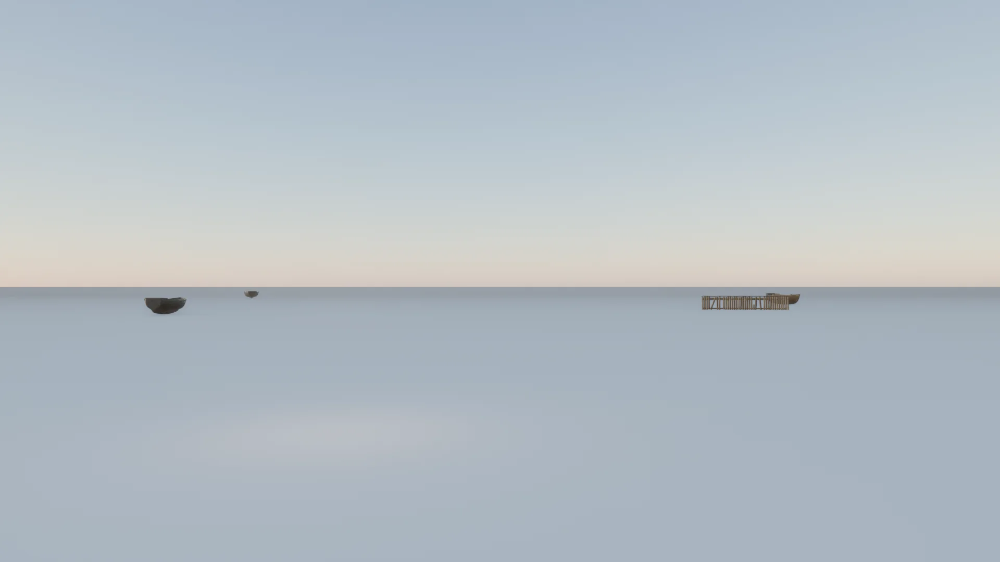
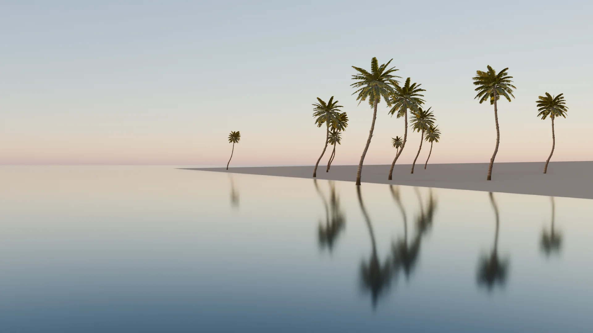